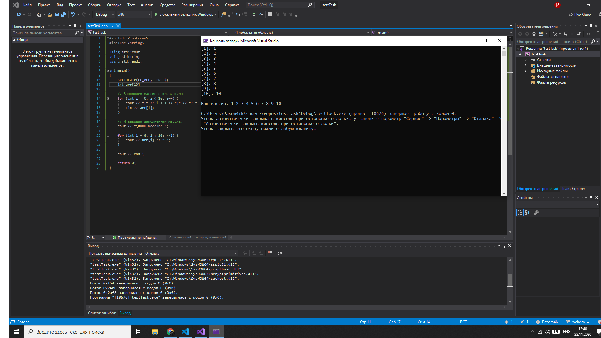

Из школьного курса математики мы все знаем, что такое переменные.
В программировании принципы довольно схожи.
Переменная — это «ячейка»
оперативной памяти компьютера, в которой может храниться какая-либо информация.
В программировании переменная, как и в математике, может иметь название, состоящее из одной латинской буквы, но также может состоять из нескольких символов, целого слова или нескольких слов.
В языке С++ все переменные имеют определенный тип данных. Например, переменная, имеющая целочисленный тип не может содержать ничего кроме целых чисел, а переменная с плавающей точкой — только дробные числа.
Тип данных присваивается переменной при ее объявлении или инициализации. Ниже приведены основные типы данных языка C++, которые нам понадобятся.
Объявление переменной в C++ происходит таким образом: сначала указывается тип данных для этой переменной а затем название этой переменной.
Сейчас мы напишем простую программу-калькулятор, которая будет принимать от пользователя два целых числа, а затем определять их сумму:
#include
using namespace std;
int main()
{
setlocale(0, "");
/*7*/ int a, b; // объявление двух переменных a и b целого типа данных.
cout << "Введите первое число: ";
cin >> a; // пользователь присваивает переменной a какое-либо значение.
cout << "Введите второе число: ";
cin >> b;
/*12*/ int c = a + b; // новой переменной c присваиваем значение суммы введенных пользователем данных.
cout << "Сумма чисел = " << c << endl; // вывод ответа.
return 0;
}
В 7-й строке кода программы мы объявляем переменные «a» и «b» целого типа int.
В следующей строке кода выводится сообщение пользователю, чтобы он ввел с
клавиатуры первое число.
В 9-й строке стоит еще незнакомая вам конструкция — cin >>.
С помощью нее у пользователя запрашивается ввод значения переменной «a»
с клавиатуры. Аналогичным образом задается значение переменной «b».
В 12-й строке мы производим инициализацию переменной «c» суммой переменных
«a» и «b». Далее находится уже знакомый вам оператор cout, который выводит
на экран строку и значение переменной «c».
Встречаются ситуации, когда программе нужно выбрать, какую операцию ей выполнить, в зависимости от определенного условия. К примеру, мы вводим с клавиатуры целое число. Если это число больше десяти, то программа должна выполнить одно действие, иначе — другое. Реализуем этот алгоритм на C++ с помощью конструкции ветвления.
#include
using namespace std;
int main()
{
setlocale(0, "");
double num;
cout << "Введите произвольное число: ";
cin >> num;
if (num < 10) { // Если введенное число меньше 10.
cout << "Это число меньше 10." << endl;
} else { // иначе
cout << "Это число больше либо равно 10." << endl;
}
return 0;
}
Если вы запустите эту программу, то при вводе числа, меньшего десяти, будет выводиться соответствующее сообщение. Если введенное число окажется большим, либо равным десяти — отобразится другое сообщение.
Оператор if служит для того, чтобы выполнить какую-либо операцию в том случае, когда условие является верным. Условная конструкция в С++ всегда записывается в круглых скобках после оператора if. Внутри фигурных скобок указывается тело условия. Если условие выполнится, то начнется выполнение всех команд, которые находятся между фигурными скобками.
if (num < 10) { // Если введенное число меньше 10.
cout << "Это число меньше 10." << endl;
} else { // иначе
cout << "Это число больше либо равно 10." << endl;
}
Здесь говорится: «Если переменная num меньше 10 — вывести соответствующее сообщение. Иначе, вывести другое сообщение». Усовершенствуем программу так, чтобы она выводила сообщение, о том, что переменная num равна десяти:
if (num < 10) { // Если введенное число меньше 10.
cout << "Это число меньше 10." << endl;
} else if (num == 10) {
cout << "Это число равно 10." << endl;
} else { // иначе
cout << "Это число больше 10." << endl;
}
Здесь мы проверяем три условия:
Заметьте, что во втором условии, при проверке равенства, мы используем оператор равенства — ==, а не оператор присваивания, потому что мы не изменяем значение переменной при проверке, а сравниваем ее текущее значение с числом 10.
Каждому оператору if соответствует только один оператор else. Совокупность этих операторов — else if означает, что если не выполнилось предыдущее условие, то проверить данное. Если ни одно из условий не верно, то выполняется тело оператора else. Если после оператора if, else или их связки else if должна выполняться только одна команда, то фигурные скобки можно не ставить. Предыдущую программу можно записать следующим образом:
#include
using namespace std;
int main()
{
setlocale(0, "");
double num;
cout << "Введите произвольное число: ";
cin >> num;
if (num < 10) // Если введенное число меньше 10.
cout << "Это число меньше 10." << endl;
else if (num == 10)
cout << "Это число равно 10." << endl;
else // иначе
cout << "Это число больше 10." << endl;
return 0;
}
Такой метод записи выглядит более компактно. Если при выполнении условия нам требуется выполнить более одной команды, то фигурные скобки необходимы. Например:
#include
using namespace std;
int main()
{
setlocale(0, "");
double num;
int k;
cout << "Введите произвольное число: ";
cin >> num;
if (num < 10) { // Если введенное число меньше 10.
cout << "Это число меньше 10." << endl;
k = 1;
} else if (num == 10) {
cout << "Это число равно 10." << endl;
k = 2;
} else { // иначе
cout << "Это число больше 10." << endl;
k = 3;
}
cout << "k = " << k << endl;
return 0;
}
Данная программа проверяет значение переменной num. Если она меньше 10, то присваивает переменной k значение единицы. Если переменная num равна десяти, то присваивает переменной k значение двойки. В противном случае — значение тройки. После выполнения ветвления, значение переменной k выводится на экран. Хорошенько потренируйтесь, попробуйте придумать свой пример с ветвлением. Когда поймете, что поняли эту тему, можете смело приступать к следующему уроку.
Иногда необходимо повторять одно и то же действие несколько раз подряд. Для этого используют циклы. В этом уроке мы научимся программировать циклы на C++, после чего посчитаем сумму всех чисел от 1 до 1000.
Если мы знаем точное количество действий (итераций) цикла, то можем использовать цикл for. Синтаксис его выглядит примерно так:
for (действие до начала цикла;
условие продолжения цикла;
действия в конце каждой итерации цикла) {
инструкция цикла;
инструкция цикла 2;
инструкция цикла N;
}
Итерацией цикла называется один проход этого цикла Существует частный случай этой записи, который мы сегодня и разберем:
for (счетчик = значение; счетчик < значение; шаг цикла) {
тело цикла;
}
Счетчик цикла — это переменная, в которой хранится количество проходов данного цикла.
Напишем программу, которая будет считать сумму всех чисел от 1 до 1000.
#include
using namespace std;
int main()
{
int i; // счетчик цикла
int sum = 0; // сумма чисел от 1 до 1000.
setlocale(0, "");
for (i = 1; i <= 1000; i++) // задаем начальное значение 1, конечное 1000 и задаем шаг цикла - 1.
{
sum = sum + i;
}
cout << "Сумма чисел от 1 до 1000 = " << sum << endl;
return 0;
}
Если мы скомпилируем этот код и запустим программу, то она покажет нам ответ: 500500.
Это и есть сумма всех целых чисел от 1 до 1000. Если считать это вручную, понадобится
очень много времени и сил. Цикл выполнил всю рутинную работу за нас.
Заметьте, что конечное значение счетчика я задал нестрогим неравенством
( <= — меньше либо равно), поскольку, если бы я поставил знак меньше,
то цикл произвел бы 999 итераций, т.е. на одну меньше, чем требуется.
Это довольно важный момент, т.к. здесь новички часто допускают ошибки,
особенно при работе с массивами (о них будет рассказано в следующем уроке).
Значение шага цикла я задал равное единице. i++ — это тоже самое, что и i = i + 1.
В теле цикла, при каждом проходе программа увеличивает значение переменной
sum на i. Еще один очень важный момент — в начале программы я присвоил
переменной sum значение нуля. Если бы я этого не сделал, программа вылетела
вы в сегфолт.
При объявлении переменной без ее инициализации что эта переменная
будет хранить «мусор».
Естественно к мусору мы ничего прибавить не можем. Некоторые компиляторы,
такие как gcc, инициализирует переменную нулем при ее объявлении.
Когда мы не знаем, сколько итераций должен произвести цикл, нам понадобится цикл while или do...while. Синтаксис цикла while в C++ выглядит следующим образом.
while (Условие) {
Тело цикла;
}
Данный цикл будет выполняться, пока условие, указанное в круглых скобках
является истиной. Решим ту же задачу с помощью цикла while. Хотя здесь мы
точно знаем, сколько итераций должен выполнить цикл, очень часто бывают
ситуации, когда это значение неизвестно.
Ниже приведен исходный код программы, считающей сумму всех целых чисел от 1 до 1000.
#include
using namespace std;
int main()
{
setlocale(0, "");
int i = 0; // инициализируем счетчик цикла.
int sum = 0; // инициализируем счетчик суммы.
while (i < 1000)
{
i++;
sum += i;
}
cout << "Сумма чисел от 1 до 1000 = " << sum << endl;
return 0;
}
После компиляции программа выдаст результат, аналогичный результату
работы предыдущей программы. Но поясним несколько важных моментов.
Я задал строгое неравенство в условии цикла и инициализировал
счетчик i нулем, так как в цикле while происходит на одну итерацию
больше, потому он будет выполняться, до тех пор, пока значение
счетчика перестает удовлетворять условию, но данная итерация
все равно выполнится. Если бы мы поставили нестрогое неравенство,
то цикл бы закончился, когда переменная i стала бы равна 1001 и
выполнилось бы на одну итерацию больше.
Теперь давайте рассмотрим по порядку исходный код нашей программы.
Сначала мы инициализируем счетчик цикла и переменную, хранящую сумму чисел.
В данном случае мы обязательно должны присвоить счетчику цикла
какое-либо значение, т.к. в предыдущей программе мы это значение
присваивали внутри цикла for, здесь же, если мы не инициализируем
счетчик цикла, то в него попадет «мусор» и компилятор в лучшем случае
выдаст нам ошибку, а в худшем, если программа соберется — сегфолт
практически неизбежен.
Затем мы описываем условие цикла — «пока переменная i меньше 1000 —
выполняй цикл». При каждой итерации цикла значение переменной-счетчика
i увеличивается на единицу внутри цикла.
Когда выполнится 1000 итераций цикла, счетчик станет равным 999
и следующая итерация уже не выполнится, поскольку 1000 не меньше
1000. Выражение sum += i является укороченной записью sum = sum + i.
После окончания выполнения цикла, выводим сообщение с ответом.
Цикл do while очень похож на цикл while. Единственное их различие в том, что при выполнении цикла do while один проход цикла будет выполнен независимо от условия. Решение задачи на поиск суммы чисел от 1 до 1000, с применением цикла do while.
#include
using namespace std;
int main ()
{
setlocale(0, "");
int i = 0; // инициализируем счетчик цикла.
int sum = 0; // инициализируем счетчик суммы.
do {// выполняем цикл.
i++;
sum += i;
} while (i < 1000); // пока выполняется условие.
cout << "Сумма чисел от 1 до 1000 = " << sum << endl;
return 0;
}
Принципиального отличия нет, но если присвоить переменной i
значение, большее, чем 1000, то цикл все равно выполнит хотя бы один проход.
Попрактикуйтесь, поэкспериментируйте над собственными примерами задач.
Циклы — очень важная вещь, поэтому им стоит уделить побольше внимания.
Когда поймете, как работают циклы — можете смело переходить к изучению
следующего урока.
Сегодня мы с поговорим о массивах. Вы уже знаете, что переменная —
это ячейка в памяти компьютера, где может храниться одно единственное
значение. Массив — это область памяти, где могут последовательно
храниться несколько значений.
Возьмем группу студентов из десяти человек. У каждого из них есть
фамилия. Создавать отдельную переменную для каждого студента — не
рационально. Создадим массив, в котором будут храниться фамилии
всех студентов.
string students[10] = {
"Иванов", "Петров", "Сидоров",
"Ахмедов", "Ерошкин", "Выхин",
"Андеев", "Вин Дизель", "Картошкин", "Чубайс"
};
Массив создается почти так же, как и обычная переменная. Для хранения
десяти фамилий нам нужен массив, состоящий из 10 элементов. Количество
элементов массива задается при его объявлении и заключается в
квадратные скобки.
Чтобы описать элементы массива сразу при его создании, можно
использовать фигурные скобки. В фигурных скобках значения
элементов массива перечисляются через запятую. В конце закрывающей
фигурной скобки ставится точка с запятой.
Попробуем вывести наш массив на экран с помощью оператора cout.
#include
#include
int main()
{
std::string students[10] = {
"Иванов", "Петров", "Сидоров",
"Ахмедов", "Ерошкин", "Выхин",
"Андеев", "Вин Дизель", "Картошкин", "Чубайс"
};
std::cout << students << std::endl; // Пытаемся вывести весь массив непосредственно
return 0;
}
Скомпилируйте этот код и посмотрите, на результат работы программы. Готово? А теперь запустите программу еще раз и сравните с предыдущим результатом. В моей операционной системе вывод был следующим:
Мы видим, что выводится адрес этого массива в оперативной памяти, а
никакие не «Иванов» и «Петров».
Дело в том, что при создании переменной, ей выделяется определенное
место в памяти. Если мы объявляем переменную типа int, то на машинном
уровне она описывается двумя параметрами — ее адресом и размером хранимых данных.
Массивы в памяти хранятся таким же образом. Массив типа int из 10 элементов
описывается с помощью адреса его первого элемента и количества байт, которое
может вместить этот массив. Если для хранения одного целого числа выделяется
4 байта, то для массива из десяти целых чисел будет выделено 40 байт.
Так почему же, при повторном запуске программы, адреса различаются?
Это сделано для защиты от атак переполнения буфера. Такая технология
называется рандомизацией адресного пространства и реализована в
большинстве популярных ОС.
Попробуем вывести первый элемент массива — фамилию студента Иванова.
#include
#include
int main()
{
std::string students[10] = {
"Иванов", "Петров", "Сидоров",
"Ахмедов", "Ерошкин", "Выхин",
"Андеев", "Вин Дизель", "Картошкин", "Чубайс"
};
std::cout << students[0] << std::endl;
return 0;
}
Смотрим, компилируем, запускаем. Убедились, что вывелся именно «Иванов».
Заметьте, что нумерация элементов массива в C++ начинается с нуля.
Следовательно, фамилия первого студента находится в students[0], а
фамилия последнего — в students[9].
В большинстве языков программирования нумерация элементов массива
также начинается с нуля.
Попробуем вывести список всех студентов. Но сначала подумаем, а
что если бы вместо группы из десяти студентов, была бы кафедра
их ста, факультет из тысячи, или даже весь университет? Ну не
будем же мы писать десятки тысяч строк с cout?
Конечно же нет! Мы возьмем на вооружение циклы, о которых был написан предыдущий урок.
#include
#include
int main()
{
std::string students[10] = {
"Иванов", "Петров", "Сидоров",
"Ахмедов", "Ерошкин", "Выхин",
"Андеев", "Вин Дизель", "Картошкин", "Чубайс"
};
for (int i = 0; i < 10; i++) {
std::cout << students[i] << std::endl;
}
return 0;
}
Если бы нам пришлось выводить массив из нескольких тысяч фамилий,
то мы бы просто увеличили конечное значение счетчика цикла —
строку for (...; i < 10; ...) заменили на for (...; i < 10000; ...).
Заметьте что счетчик нашего цикла начинается с нуля,
а заканчивается девяткой. Если вместо оператора строгого
неравенства — i < 10 использовать оператор «меньше, либо
равно» — i <= 10, то на последней итерации программа
обратится к несуществующему элементу массива — students[10].
Это может привести к ошибкам сегментации и аварийному
завершению программы. Будьте внимательны — подобные ошибки
бывает сложно отловить.
Массив, как и любую переменную можно не заполнять значениями при объявлении.
string students[10];
// или
string teachers[5];
Элементы такого массива обычно содержат в себе «мусор» из выделенной,
но еще не инициализированной, памяти. Некоторые компиляторы, такие
как GCC, заполняют все элементы массива нулями при его создании.
При создании статического массива, для указания его размера может
использоваться только константа. Размер выделяемой памяти определяется
на этапе компиляции и не может изменяться в процессе выполнения.
int n;
cin >> n;
string students[n]; /* Неверно */
Выделение памяти в процессе выполнения возможно при работе
с динамическими массивами. Но о них немного позже.
Заполним с клавиатуры пустой массив из 10 элементов.
#include
#include
using std::cout;
using std::cin;
using std::endl;
int main()
{
int arr[10];
// Заполняем массив с клавиатуры
for (int i = 0; i < 10; i++) {
cout << "[" << i + 1 << "]" << ": ";
cin >> arr[i];
}
// И выводим заполненный массив.
cout << "\nВаш массив: ";
for (int i = 0; i < 10; ++i) {
cout << arr[i] << " ";
}
cout << endl;
return 0;
}
Скомпилируем эту программу и проверим ее работу.
Если у вас возникают проблемы при компиляции исходников из уроков — внимательно прочитайте ошибку компилятора, попробуйте проанализировать и исправить ее.
Массивы — очень важная вещь в программировании.
Сегодня мы поговорим о функциях в C++. Очень часто в программировании необходимо выполнять одни и те же действия. Например, мы хотим выводить пользователю сообщения об ошибке в разных местах программы, если он ввел неверное значение. без функций это выглядело бы так:
#include
#include
using namespace std;
int main()
{
string valid_pass = "qwerty123";
string user_pass;
cout << "Введите пароль: ";
getline(cin, user_pass);
if (user_pass == valid_pass) {
cout << "Доступ разрешен." << endl;
} else {
cout << "Неверный пароль!" << endl;
}
return 0;
}
А вот аналогичный пример с функцией:
#include
#include
using namespace std;
void check_pass (string password)
{
string valid_pass = "qwerty123";
if (password == valid_pass) {
cout << "Доступ разрешен." << endl;
} else {
cout << "Неверный пароль!" << endl;
}
}
int main()
{
string user_pass;
cout << "Введите пароль: ";
getline (cin, user_pass);
check_pass (user_pass);
return 0;
}
По сути, после компиляции не будет никакой разницы для процессора, как для первого кода, так и для второго. Но ведь такую проверку пароля мы можем делать в нашей программе довольно много раз. И тогда получается копипаста и код становится нечитаемым. Функции — один из самых важных компонентов языка C++.
#include
using namespace std;
void function_name ()
{
cout << "Hello, world" << endl;
}
int main()
{
function_name(); // Вызов функции
return 0;
}
Перед вами тривиальная программа, Hello, world, только реализованная с
использованием функций.
Если мы хотим вывести «Hello, world» где-то еще, нам просто нужно
вызвать соответствующую функцию. В данном случае это делается так:
function_name();. Вызов функции имеет вид имени функции с
последующими круглыми скобками. Эти скобки могут быть пустыми,
если функция не имеет аргументов. Если же аргументы в самой
функции есть, их необходимо указать в круглых скобках.
Также существует такое понятие, как параметры функции по умолчанию.
Такие параметры можно не указывать при вызове функции, т.к. они
примут значение по умолчанию, указанно после знака присваивания
после данного параметра и списке всех параметров функции.
В предыдущих примерах мы использовали функции типа void, которые
не возвращают никакого значения. Как многие уже догадались,
оператор return используется для возвращения вычисляемого функцией значения.
Рассмотрим пример функции, возвращающей значение на примере проверки пароля.
#include
#include
using namespace std;
string check_pass (string password)
{
string valid_pass = "qwerty123";
string error_message;
if (password == valid_pass) {
error_message = "Доступ разрешен.";
} else {
error_message = "Неверный пароль!";
}
return error_message;
}
int main()
{
string user_pass;
cout << "Введите пароль: ";
getline (cin, user_pass);
string error_msg = check_pass (user_pass);
cout << error_msg << endl;
return 0;
}
В данном случае функция check_pass имеет тип string, следовательно
она будет возвращать только значение типа string, иными словами
говоря строку. Давайте рассмотрим алгоритм работы этой программы.
Самой первой выполняется функция main(), которая должна
присутствовать в каждой программе. Теперь мы объявляем
переменную user_pass типа string, затем выводим пользователю
сообщение «Введите пароль», который после ввода попадает
в строку user_pass. А вот дальше начинает работать наша
собственная функция check_pass().
В качестве аргумента этой функции передается строка,
введенная пользователем.
Аргумент функции — это, если сказать простым языком
переменные или константы вызывающей функции, которые
будет использовать вызываемая функция.
При объявлении функций создается формальный параметр,
имя которого может отличаться от параметра, передаваемого
при вызове этой функции. Но типы формальных параметров и
передаваемых функии аргументов в большинстве случаев должны
быть аналогичны.
После того, как произошел вызов функции check_pass(), начинает
работать данная функция. Если функцию нигде не вызвать, то этот
код будет проигнорирован программой. Итак, мы передали в
качестве аргумента строку, которую ввел пользователь.
Теперь эта строка в полном распоряжении функции (хочу обратить
Ваше внимание на то, что переменные и константы, объявленные
в разных функциях независимы друг от друга, они даже могут
иметь одинаковые имена. В следующих уроках я расскажу о том,
что такое область видимости, локальные и глобальные переменные).
Теперь мы проверяем, правильный ли пароль ввел пользователь
или нет. если пользователь ввел правильный пароль, присваиваем
переменной error_message соответствующее значение. если нет,
то сообщение об ошибке.
После этой проверки мы возвращаем переменную error_message.
На этом работа нашей функции закончена. А теперь, в функции
main(), то значение, которое возвратила наша функция мы
присваиваем переменной error_msg и выводим это значение
(строку) на экран терминала.
Также, можно организовать повторный ввод пароля с помощью
рекурсии (о ней мы еще поговорим). Если объяснять вкратце,
рекурсия — это когда функция вызывает сама себя.
Смотрите еще один пример:
#include
#include
using namespace std;
bool password_is_valid (string password)
{
string valid_pass = "qwerty123";
if (valid_pass == password)
return true;
else
return false;
}
void get_pass ()
{
string user_pass;
cout << "Введите пароль: ";
getline(cin, user_pass);
if (!password_is_valid(user_pass)) {
cout << "Неверный пароль!" << endl;
get_pass (); // Здесь делаем рекурсию
} else {
cout << "Доступ разрешен." << endl;
}
}
int main()
{
get_pass ();
return 0;
}
Функции очень сильно облегчают работу программисту и намного повышают читаемость и понятность кода, в том числе и для самого разработчика (не удивляйтесь этому, т. к. если вы откроете код, написанный вами полгода назад,не сразу поймете соль, поверьте на слово). Не расстраивайтесь, если не сразу поймете все аспекты функций в C++, т. к. это довольно сложная тема и мы еще будем разбирать примеры с функциями в следующих уроках. Совет: не бойтесь экспериментировать, это очень хорошая практика, а после прочтения данной статьи порешайте элементарные задачи, но с использованием функций. Это будет очень полезно для вас.
При выполнении любой программы, все необходимые для ее работы данные
должныбыть загружены в оперативную память компьютера. Для обращения
к переменным, находящимся в памяти, используются специальные адреса,
которые записываются в шестнадцатеричном виде, например 0x100 или 0x200.
Если переменных в памяти потребуется слишком большое количество, которое
не сможет вместить в себя сама аппаратная часть, произойдет перегрузка
системы или её зависание.
Если мы объявляем переменные статично, так как мы делали в предыдущих
уроках, они остаются в памяти до того момента, как программа завершит
свою работу, а после чего уничтожаются.
Такой подход может быть приемлем в простых примерах и несложных
программах, которые не требуют большого количества ресурсов.
Если же наш проект является огромным программным комплексом с
высоким функционалом, объявлять таким образом переменные, естественно,
было бы довольно не умно.
Можете себе представить, если бы небезызвестная Battlefield 3
использовала такой метод работы с данными? В таком случае,
самым заядлым геймерам пришлось бы перезагружать свои высоконагруженные
системы кнопкой reset после нескольких секунд работы игры.
Дело в том, что играя в тот же Battlefield, геймер в каждый новый
момент времени видит различные объекты на экране монитора, например
сейчас я стреляю во врага, а через долю секунды он уже падает убитым,
создавая вокруг себя множество спецэффектов, таких как пыль, тени, и т.п.
Естественно, все это занимает какое-то место в оперативной памяти компьютера.
Если не уничтожать неиспользуемые объекты, очень скоро они заполнят весь
объем ресурсов ПК.
По этим причинам, в большинстве языков, в том числе и C/C++, имеется
понятие указателя. Указатель — это переменная, хранящая в себе адрес
ячейки оперативной памяти, например 0x100.
Мы можем обращаться, например к массиву данных через указатель, который
будет содержать адрес начала диапазона ячеек памяти, хранящих этот массив.
После того, как этот массив станет не нужен для выполнения остальной
части программы, мы просто освободим память по адресу этого указателя,
и она вновь станет доступно для других переменных.
Ниже приведен конкретный пример обращения к переменным через указатель и напрямую.
#include
using namespace std;
int main()
{
int a; // Объявление статической переменной
int b = 5; // Инициализация статической переменной b
a = 10;
b = a + b;
cout << "b is " << b << endl;
return 0;
}
#include
using namespace std;
int main()
{
int *a = new int; // Объявление указателя для переменной типа int
int *b = new int(5); // Инициализация указателя
*a = 10;
*b = *a + *b;
cout << "b is " << *b << endl;
delete b;
delete a;
return 0;
}
Синтаксис первого примера вам уже должен быть знаком. Мы объявляем/инициализируем
статичные переменные a и b, после чего выполняем различные операции напрямую с ними.
Во втором примере мы оперируем динамическими переменными посредством указателей.
Рассмотрим общий синтаксис указателей в C++.
Выделение памяти осуществляется с помощью оператора new и имеет вид: тип_данных
*имя_указателя = new тип_данных;, например int *a = new int;. После удачного
выполнения такой операции, в оперативной памяти компьютера происходит выделение
диапазона ячеек, необходимого для хранения переменной типа int.
Логично предположить, что для разных типов данных выделяется разное количество
памяти. Следует быть особенно осторожным при работе с памятью, потому что именно
ошибки программы, вызванные утечкой памяти, являются одними из самых трудно
находимых. На отладку программы в поисках одной ничтожной ошибки, может уйти
час, день, неделя, в зависимости от упорности разработчика и объема кода.
Инициализация значения, находящегося по адресу указателя выполняется схожим
образом, только в конце ставятся круглые скобки с нужным значением: тип данных
*имя_указателя = new тип_данных(значение). В нашем примере это int *b = new int(5).
Для того, чтобы получить адрес в памяти, на который ссылается указатель,
используется имя переменной-указателя с префиксом &. перед ним (не путать
со знаком ссылки в C++).
Например, чтобы вывести на экран адрес ячейки памяти, на который ссылается
указатель b во втором примере, мы пишем cout << "Address of b is " << &b << endl;.
В моей системе, я получил значение 0x1aba030. У вас оно может быть другим,
потому что адреса в оперативной памяти распределяются таким образом, чтобы
максимально уменьшить фрагментацию. Поскольку, в любой системе список запущенных
процессов, а также объем и разрядность памяти могут отличаться, система сама
распределяет данные для обеспечения минимальной фрагментации.
Для того, чтобы получить значение, которое находится по адресу, на который
ссылается указатель, используется префикс *. Данная операция называется
разыменованием указателя.
Во втором примере мы выводим на экран значение, которое находится в ячейке
памяти (у меня это 0x1aba030): cout << "b is " << *b << endl; . В этом случае
необходимо использовать знак *.
Чтобы изменить значение, находящееся по адресу, на который ссылается указатель,
нужно также использовать звездочку, например, как во втором примере — *b = *a + *b;.
В этих вещах очень часто возникают недопонимания, и кстати, не только у
новичков. Многие из тех, кто начинал программировать с того же php,
также часто испытывают подобную путаницу при работе с памятью.
Для того, чтобы освободить память, выделенную оператором new, используется оператор delete.
#include
using namespace std;
int main()
{
// Выделение памяти
int *a = new int;
int *b = new int;
float *c = new float;
// ... Любые действия программы
// Освобождение выделенной памяти
delete c;
delete b;
delete a;
return 0;
}
!!! При использовании оператора delete для указателя, знак * не используется.
В одном из предыдущих уроков мы разобрали понятие массива. При объявлении, мы задавали массиву определенный постоянный размер. Возможно, кто-то из читателей пробовал делать так:
int n = 10;
int arr[n];
Но, как уже было сказано — при объявлении статического массива, его размером
должна являться числовая константа, а не переменная. В большинстве случаев,
целесообразно выделять определенное количество памяти для массива, значение
которого изначально неизвестно.
Например, необходимо создать динамический массив из N элементов, где
значение N задается пользователем. В предыдущем уроке мы учились выделять
память для переменных, используя указатели. Выделение памяти для динамического
массива имеет аналогичный принцип.
#include
using namespace std;
int main()
{
int num; // размер массива
cout << "Enter integer value: ";
cin >> num; // получение от пользователя размера массива
int *p_darr = new int[num]; // Выделение памяти для массива
for (int i = 0; i < num; i++) {
// Заполнение массива и вывод значений его элементов
p_darr[i] = i;
cout << "Value of " << i << " element is " << p_darr[i] << endl;
}
delete [] p_darr; // очистка памяти
return 0;
}
Синтаксис выделения памяти для массива имеет вид указатель = new тип[размер]. В качестве размера массива может выступать любое целое положительное значение.